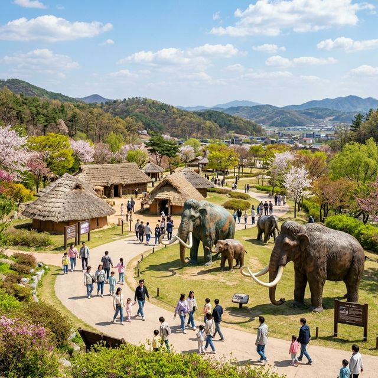
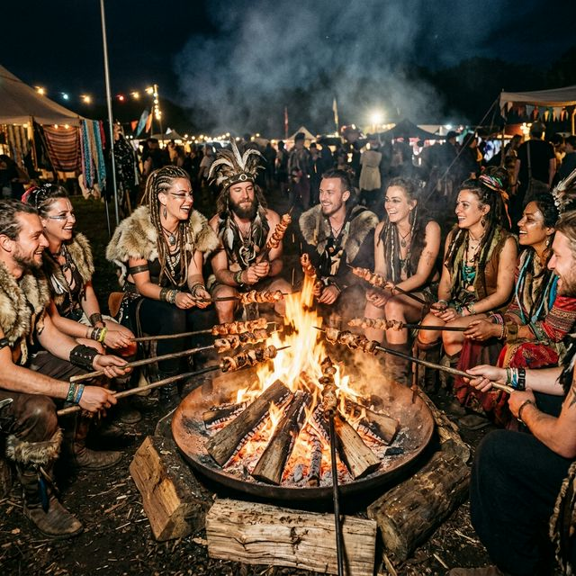
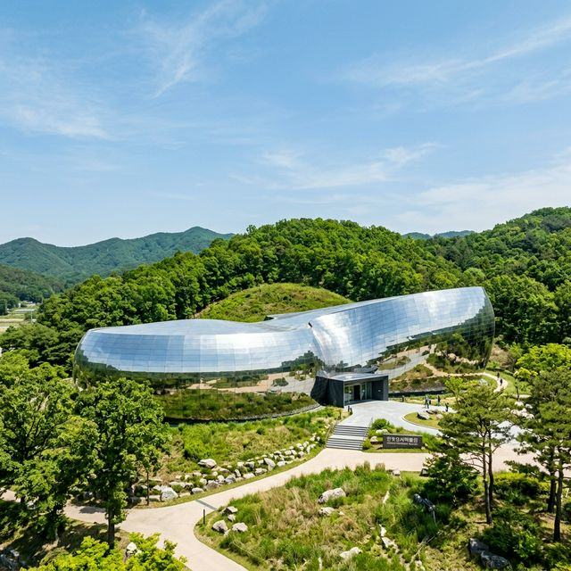

연천 구석기 축제 2026 주차장 및 바베큐 체험 사전 예약 방법: 아이와 가볼만한곳
수십만 년 전, 한반도의 첫 인류가 불을 피우고 도구를 만들던 그 신비로운 현장으로 가족 나들이를 떠나보시는 건 어떨까요? 경기도 연천의 상징적 유적인 전곡리 선사유적지에서 펼쳐지는
2026 연천 구석기 축제가 5월 가정의 달을 맞아 화려하게 개최됩니다. 2026년 5월 2일부터 5일까지 4일간 진행되는 이번 축제는, 교과서에서만 보던 '아슐리안
주먹도끼'를 실제로 마주하고 원시인복을 입은 채 참나무 화로에 고기를 구워 먹는 등 오감을 자극하는 특별한 경험을 선사합니다. 아이들에게는 살아있는 역사의 장이 되고 어른들에게는 잠시 일상을 잊고
태고의 여유를 즐길 수 있는 힐링의 시간, 연천 구석기 축제의 상세 일정과 입장료 환급 꿀팁, 그리고 주차 전쟁에서 살아남는 명당 정보까지 빠짐없이 정리해 드립니다.
1. 한반도 구석기의 시작, 연천 전곡리 유적의 역사적 가치
연천 전곡리 유적은 단순한 발굴지가 아닙니다. 1978년 미군 병사에 의해 발견된 '아슐리안 주먹도끼'는 동아시아에는 눈물방울 모양의 정교한 석기 문화가 없었다는 기존 고고학계의 '모비우스 학설'을 단숨에
뒤집어버린 세계적인 고고학적 사건의 중심지입니다. 연천 구석기 축제는 이러한 역사적 자부심을 바탕으로, 구석기 문화를 가장 재미있고 생생하게 전달하기 위해
기획되었습니다.
전곡리 유적지는 광활한 평원 위에 조성되어 있어 그 자체로 훌륭한 산책로이며, 축제 기간에는 이곳 전체가 수만 년 전의 원시 마을로 변하게 됩니다. 거대한 맘모스 모형과 움집들이 늘어선 풍경은 마치 타임머신을
타고 과거로 돌아간 듯한 착각을 불러일으킵니다. 아이들은 이곳에서 인류가 어떻게 진화해 왔는지, 불을 피우는 것이 얼마나 대단한 혁명이었는지를 스스로 깨닫게 됩니다. 역사 교육과 즐거운 놀이가 완벽하게 결합된
이곳은 가정의 달 5월에 방문해야 할 0순위 여행지입니다.

수만 년 전 구석기 시대를 재현한 전곡리 선사유적지의 드넓은 축제장 전경 - AI 제작 이미지
2. 2026 제33회 연천 구석기 축제 일정 및 입장료 정책
이번 제33회 축제는 2026년 5월 2일(토)부터 5월 5일(어린이날)까지 황금연휴 기간에 맞춰 열립니다. 운영 시간은 오전 10시부터 저녁까지 이어지며, 야간에는 화려한 드론
라이트 쇼와 불꽃놀이가 연천의 밤하늘을 수놓을 예정입니다. 축제의 주제인 '문명을 문화로'라는 슬로건에 맞춰 한층 세련되고 풍성해진 전시와 공연들이 준비되어 있습니다.
가장 반가운 점은 경제적인 입장료 정책입니다. 성인 기준 7,000원의 입장료를 내면 5,000원을 '연천사랑 상품권'으로 돌려주며, 어린이는 3,000원 입장료 전액을 상품권으로 환급해 줍니다. 사실상
무료이거나 아주 저렴한 금액으로 축제를 즐길 수 있는 셈입니다. 환급받은 지역 화폐는 축제장 내 먹거리 장터나 특산물 판매장에서 현금처럼 사용할 수 있어 지역 경제 활성화에도 기여하고 방문객의 부담도 줄여주는
일석이조의 효과를 냅니다. 장애인, 국가유공자, 연천군민 등 무료입장 대상자는 반드시 증빙 서류를 지참하시기 바랍니다.
3. 축제의 꽃, 시그니처 프로그램 '구석기 바베큐' 체험
연천 구석기 축제에 와서 구석기 바베큐를 빼놓는다면 축제의 절반을 놓치는 것과 같습니다. 수 미터에 달하는 대형 참나무 화로 수십 개가 늘어선 모습은 그 자체로 압도적인
장관입니다. 방문객들은 긴 나무 꼬치에 꽂은 신선한 돼지고기를 직접 불 앞에 서서 돌려가며 굽게 됩니다. 기름기가 쏙 빠지고 참나무 향이 진하게 배어든 고기 한 점은 어떤 고급 식당의 스테이크보다도 강렬한
맛을 선사합니다.
< 전용 의상실에서 원시인 옷을 대여해 입고 고기를 굽는다면 더욱 완벽한 구석기인이 된 기분을 느낄 수 있습니다. 바베큐 체험비는 별도로 발생하지만, 입구에서 환급받은 상품권으로 결제가 가능해 인기가 매우
높습니다. 주말에는 긴 대기 줄이 생길 수 있으므로, 축제장에 도착하자마자 바베큐 구역의 대기 상황을 먼저 확인하거나 번호표 시스템을 활용하는 지혜가 필요합니다. 연기를 쐬며 고기를 굽는 과정 자체가
아이들에게는 잊지 못할 추억의 놀이가 됩니다. 4. 세계 구석기 체험 마당: 오스트리아부터 일본까지
연천 구석기 축제가 타 축제와 차별화되는 지점은 바로 글로벌 교류에 있습니다. 매년 오스트리아, 프랑스, 일본, 독일 등 세계 각국의 고고학 관계자들이 직접 참여하여 각
나라 고유의 구석기 제작 방식과 생활상을 보여주는 '세계 구석기 체험 마당'이 열립니다. 방문객들은 이국적인 원시 도구들을 구경하고 전문가들과 함께 석기를 다듬어보며 인류 보편의 문화를 경험할 수
있습니다.
단순히 우리만의 축제가 아니라 세계적인 학술 가치를 공유하는 장이기에 체험의 질이 매우 높습니다. 고대의 사냥 도구인 투창기(아틀라틀)를 이용해 과녁을 맞히는 체험이나 원시적인 방식의 불 피우기 시연
등은 성인들에게도 매우 흥미로운 볼거리입니다. 언어의 장벽을 넘어 몸짓과 도구로 소통하는 이 특별한 마당은 연천 구석기 축제가 가진 수준 높은 문화 콘텐츠의 저력을 보여줍니다. 아이들과 함께 탐험가가
된 마음으로 세계 부스들을 하나하나 정복해 보세요.
| 축제 명칭 |
제33회 연천 구석기 축제 |
| 행사 기간 |
2026. 05. 02(토) ~ 05. 05(화) |
| 관람료 |
성인 7천원 (5천원 지역화폐 환급) |
| 핵심 체험 |
참나무 화로 돼지고기 바베큐 구이 |
5. 주차 전쟁에서 승리하는 명당 정보 및 셔틀버스 활용
어린이날 연휴가 겹친 연천 구석기 축제는 엄청난 인파로 인해 주차난이 매우 심각할 수 있습니다. 전곡리 유적 메인 주차장은 오전 일찍 만차되는 경우가 허다합니다. 이럴 때는 무리하게 입구까지 가기보다
연천군청이나 전곡역 인근 공영 주차장에 차를 대고 무료로 운행되는 셔틀버스를 타는 것이 훨씬 빠릅니다. 정기적으로 운행되는 셔틀버스는 행사장 정문 바로 앞까지 안내해
주므로 이동의 번거로움을 줄여줍니다.
만약 자차 이용이 필수라면 오전 9시 30분 이전에 도착하여 선사박물관 하단 주차장을 공략해 보세요. 그늘이 있는 자리를 선점하면 하루 종일 햇볕에 뜨거워진 차 안에서 고생하지 않아도 됩니다.
내비게이션에 '연천 구석기 축제 주차장'을 검색하면 실시간으로 혼잡도가 표시되는 경우도 있으니 확인하시기 바랍니다. 또한, 축제 기간 연천 시내 주요 도로가 통제될 수 있으니 안내 요원의 지시에 적극
협조하는 매너 있는 방문객이 되어주세요.

대형 참나무 화로 앞에 둘러앉아 긴 꼬치에 꿴 고기를 직접 구워 먹는 구석기 바베큐 체험 현장 - AI 제작 이미지
6. 구석기 올림픽과 전곡리안 서바이벌 경연 대회
활기가 넘치는 축제장 한편에서는 구석기 시대를 테마로 한 이색 경연 대회인 구석기 올림픽이 열립니다. 돌 던지기, 창 던지기, 달리기 등 원시적인 체력을 겨루는 이 대회는
현장 접수를 통해 누구나 참여할 수 있습니다. 승부욕에 불타는 아빠들과 즐거워하는 아이들의 모습이 교차하며 축제장에는 웃음소리가 끊이지 않습니다. 특히 고난도의 미션들을 해결하며 우승자를 가리는
'전곡리안 서바이벌'은 관람객들의 손에 땀을 쥐게 합니다.
경연의 결과도 중요하지만, 구석기 복장을 입고 함께 어울려 뛰노는 그 과정 자체가 현대인들에게는 큰 해방감을 줍니다. 우승자에게는 연천의 농특산물 등 푸짐한 상품이 수여되기도 하니 자신 있는 종목이
있다면 꼭 도전해 보시기 바랍니다. 아이들에게는 아빠, 엄마와 함께 릴레이 경주를 했던 기억이 그 어떤 장난감 선물보다 값진 선물이 될 것입니다. 가족 간의 유대감을 높일 수 있는 이 액티비티들을 통해
축제를 200% 즐겨보세요.
7. 밤하늘을 수놓는 타임머신: 드론 라이트 쇼 및 폐막 불꽃놀이
해가 지고 어둠이 찾아오면 전곡리 유적은 또 다른 변신을 시도합니다. 최첨단 정보 기술이 집약된 드론 라이트 쇼는 5월의 밤하늘을 캔버스 삼아 주먹도끼, 맘모스,
무용수들을 빛으로 그려냅니다. 고대 유적 위에서 펼쳐지는 미래 기술의 향연은 묘한 이질감과 함께 신비로운 감동을 선사합니다. 특히 어린이날 당일 폐막 공연과 함께 펼쳐지는 대규모 불꽃놀이는 축제의
화려한 피날레를 장식합니다.
낮 동안 뜨거웠던 열기가 가시고 선선한 강바람이 불어오는 선사 유적지의 밤 산책은 낮과는 또 다른 매력이 있습니다. 메인 무대에서는 국내 유명 가수의 공연과 화려한 밴드 연주가 이어져 축제의 분위기를
절정으로 끌어올립니다. 돗자리를 미리 준비해 잔디밭에 누워 밤하늘의 불꽃을 감상하는 시간은 연천 여행에서 가장 낭만적인 순간이 될 것입니다. 야간까지 일교차가 클 수 있으니 가벼운 겉옷을 꼭 준비하시어
감기에 걸리지 않도록 주의하세요.
8. 연천 농특산물 장터: 쌀코뿔이 미와 명품 사과 구매하기
축제장의 또 다른 즐거움은 바로 지역의 우수한 농특산물을 저렴하게 구매할 수 있는 장터입니다. 연천의 상징 캐릭터인 '쌀코뿔이'에서 이름을 딴 연천 쌀은 비옥한 토양과
맑은 물 덕분에 밥맛이 좋기로 유명합니다. 또한 연천의 일교차 큰 기후에서 자란 사과와 배는 당도가 높고 식감이 아삭하여 전국적으로 유명세를 떨치고 있습니다.
입구에서 환급받은 지역 화폐 상품권은 이곳에서 가장 유용하게 쓰입니다. 갓 수확한 싱싱한 채소부터 연천 콩으로 만든 된장, 고추장 등 발효 식품까지 믿고 살 수 있는 먹거리들이 가득합니다. 시중보다
저렴한 가격에 덤으로 정까지 얹어주는 시골 장터의 매력을 만끽해 보세요. 집으로 돌아가는 길, 양손 가득 들린 연천의 신선한 제품들은 나들이의 만족도를 완성해 줍니다. 부모님께 드릴 선물이나 우리 집
건강 식단을 위해 잠시 장터 구경에 시간을 내보시는 건 어떨까요?

축제장과 연결되어 있어 함께 관람하기 좋은 현대적 감각의 전곡리 선사박물관 전경 - AI 제작 이미지
9. 주변 가볼만한 곳: 선사박물관에서 재인폭포까지
축제장 바로 옆에 위치한 전곡리 선사박물관은 빼놓을 수 없는 필수 방문 코스입니다. 은빛 비늘을 연상케 하는 독특한 외관만큼이나 내부 전시물도 훌륭합니다. 인류의 진화
과정을 한눈에 볼 수 있는 '진화의 고리' 전시실과 실제 석기 제작 과정을 보여주는 홀로그램 영상은 아이들의 호기심을 완벽하게 충족시켜 줍니다. 축제장의 소란함에서 벗어나 잠시 시원한 실내에서 깊이
있는 역사 공부를 하기에 최적의 공간입니다.
자연 경관을 선호하신다면 차로 20분 거리에 있는 '재인폭포'를 추천합니다. 한탄강 지질공원의 백미로 꼽히는 이곳은 웅장한 주상절리와 시원하게 쏟아지는 물줄기가 압도적인 풍경을 자랑합니다. 최근 설치된
출렁다리와 전망대 덕분에 폭포의 전경을 더욱 짜릿하게 즐길 수 있습니다. '축제 체험 - 선사박물관 관람 - 재인폭포 산책'으로 이어지는 코스는 연천의 역사와 자연을 한 번에 마주하는 완벽한 하루
나들이를 보장할 것입니다. 올봄, 연천에서 여러분의 시계를 잠시 멈추고 구석기 시대의 낭만에 빠져보시길 바랍니다.
#연천구석기축제
#260420
#전곡리유적지
#5월축제추천
#어린이날가볼만한곳
#구석기바베큐
#연천여행
#주말나들이추천
#선사박물관
#재인폭포